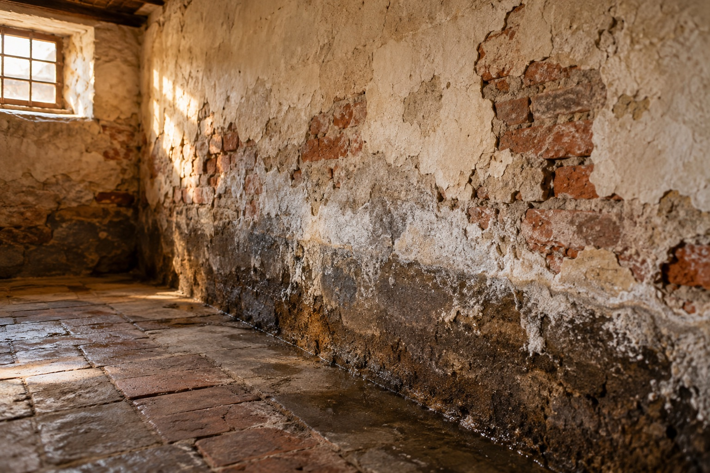
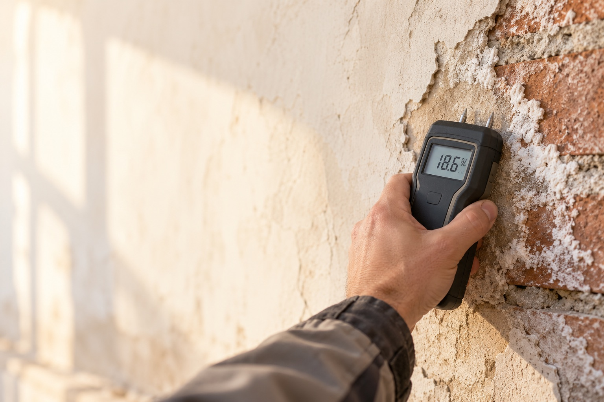
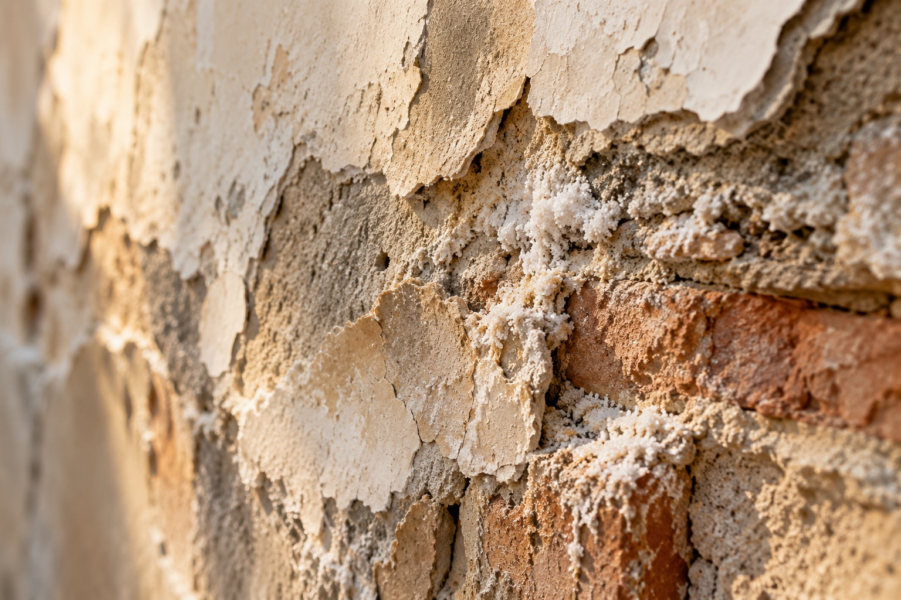
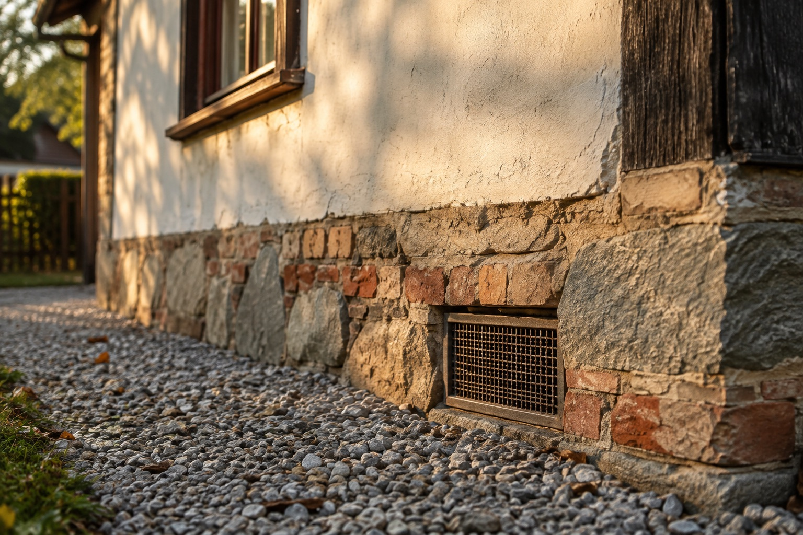
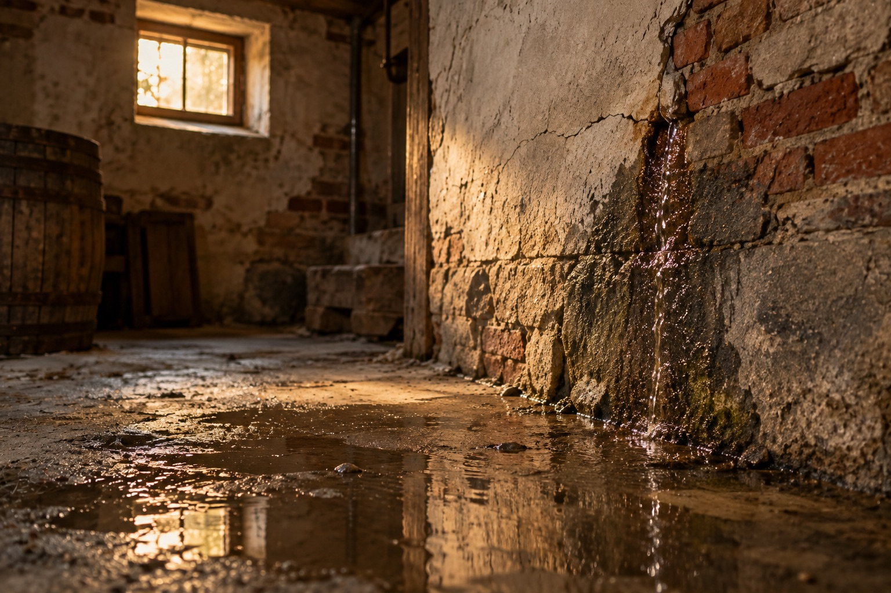
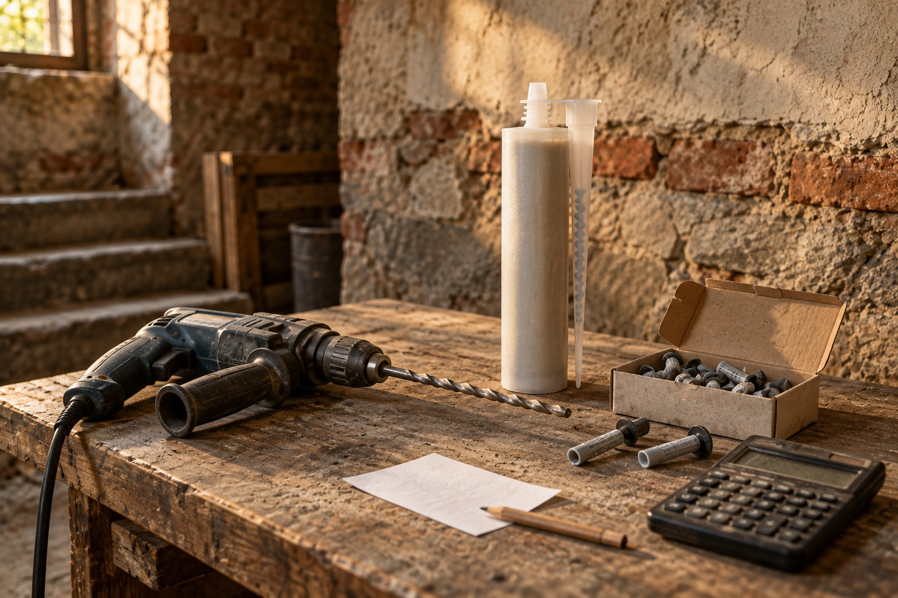

Rady a články
o vlhkosti staveb
Jak poznat, odkud se bere vlhkost, co dělat s plísní, jak správně větrat a jaké sanační technologie existují. Sepsáno z praxe, srozumitelně.

Fotka: vlhká cihlová zeď se solnými výkvěty
Fotka: měření vlhkosti zdiva přístrojem
Fotka: detail poškozené omítkyVšechny články
13 článků z praxe
 Fotka: Průvodce diagnostikou: Jak odhalit pravý původ vody ve stavebních konstrukcích
Fotka: Průvodce diagnostikou: Jak odhalit pravý původ vody ve stavebních konstrukcíchPrůvodce diagnostikou: Jak odhalit pravý původ vody ve stavebních konstrukcích
Úspěšný boj s domovní vlhkostí nelze zahájit bez precizního určení toho, proč a kudy voda do objektu proniká. Pouhé maskování následků situaci nevyřeší; klíčem k trvalému vysušení je nalezení primárního zdroje problému.
Číst článek → Fotka: Jak účinně bojovat s domovní vlhkostí a plísňovými ložisky
Fotka: Jak účinně bojovat s domovní vlhkostí a plísňovými ložiskyJak účinně bojovat s domovní vlhkostí a plísňovými ložisky
Mikroskopické houby ke svému životu nezbytně potřebují stabilní zdroj vlhkosti. Nejčastěji osídlují povrchy, na kterých dochází ke kondenzaci vodních par – k tomu dochází ve chvíli, kdy teplý vnitřní vzduch narazí na…
Číst článek → Fotka: Jak správně větrat: Jednoduchý trik, který vám ušetří peníze za topení
Fotka: Jak správně větrat: Jednoduchý trik, který vám ušetří peníze za topeníJak správně větrat: Jednoduchý trik, který vám ušetří peníze za topení
Když venku klesnou teploty, každý z nás se snaží udržet doma drahocenné teplo. Nejčastěji to řešíme pořízením moderních, skvěle těsnících oken. Jakmile ale dům takto „hermeticky“ uzavřeme, začne uvnitř rychle stoupat…
Číst článek →
Fotka: Odvětrávání stavebních konstrukcí jako nástroj pro boj s vlhkostíOdvětrávání stavebních konstrukcí jako nástroj pro boj s vlhkostí
Číst článek → Fotka: Proč se vyplatí začít průzkumem, než se pustíte do oprav vlhkého domu?
Fotka: Proč se vyplatí začít průzkumem, než se pustíte do oprav vlhkého domu?Proč se vyplatí začít průzkumem, než se pustíte do oprav vlhkého domu?
Číst článek → Fotka: Přehled technologií pro odvlhčování stavebních konstrukcí
Fotka: Přehled technologií pro odvlhčování stavebních konstrukcíPřehled technologií pro odvlhčování stavebních konstrukcí
Číst článek → Fotka: Problematika kapilárního transportu vody v základech staveb
Fotka: Problematika kapilárního transportu vody v základech stavebProblematika kapilárního transportu vody v základech staveb
Číst článek → Fotka: Problém se zasolením ve stěnách: Jak vzniká a jak ho včas odhalit?
Fotka: Problém se zasolením ve stěnách: Jak vzniká a jak ho včas odhalit?Problém se zasolením ve stěnách: Jak vzniká a jak ho včas odhalit?
Číst článek →
Fotka: Jak reagovat na zatékání do suterénních nebo sklepních prostorJak reagovat na zatékání do suterénních nebo sklepních prostor
Číst článek → Fotka: Hydroizolační systémy - membrány a jejich volba
Fotka: Hydroizolační systémy - membrány a jejich volbaHydroizolační systémy - membrány a jejich volba
Číst článek → Fotka: Injektážní postupy
Fotka: Injektážní postupyInjektážní postupy
Číst článek → Fotka: Sanační omítky a jejich aplikace
Fotka: Sanační omítky a jejich aplikaceSanační omítky a jejich aplikace
Číst článek →
Fotka: Průvodce chemickými injektážemi: Jak fungují a kolik skutečně stojí?Průvodce chemickými injektážemi: Jak fungují a kolik skutečně stojí?
Číst článek →V tomto tématu zatím není žádný článek.
Nejste si jistí, odkud se bere vlhkost?
Nejdříve zjistíme příčinu. Teprve potom má smysl řešit sanaci.